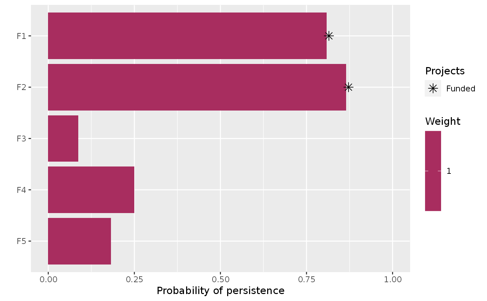

Specify that the lp_solve software should be used to solve a
project prioritization problem() using the lpSolveAPI
package. This function can also be used to customize the behavior of the
solver. It requires the lpSolveAPI package.
add_lpsolveapi_solver(x, gap = 0, presolve = FALSE, verbose = TRUE)
| x | ProjectProblem object. |
|---|---|
| gap |
|
| presolve |
|
| verbose |
|
ProjectProblem object with the solver added to it.
lp_solve is an
open-source integer programming solver.
Although this solver is the slowest currently supported solver,
it is also the only exact algorithm solver that can be installed on all
operating systems without any manual installation steps. This solver is
provided so that
users can try solving small project prioritization problems, without
needing to install additional software. When solve moderate or large
project prioritization problems, consider using
add_gurobi_solver().
# load data data(sim_projects, sim_features, sim_actions) # build problem with lpSolveAPI solver p <- problem(sim_projects, sim_actions, sim_features, "name", "success", "name", "cost", "name") %>% add_max_richness_objective(budget = 200) %>% add_binary_decisions() %>% add_lpsolveapi_solver() # print problem print(p)#> Project Prioritization Problem #> actions F1_action, F2_action, F3_action, ... (6 actions) #> projects F1_project, F2_project, F3_project, ... (6 projects) #> features F1, F2, F3, ... (5 features) #> action costs: min: 0, max: 103.22583 #> project success: min: 0.81379, max: 1 #> objective: Maximum richness objective [budget (200)] #> targets: none #> weights: default #> decisions Binary decision #> constraints: <none> #> solver: lpSolveAPI [gap (0), presolve (0), verbose (1)]#> #> Model name: 'project prioritization problem' - run #1 #> Objective: Maximize(R0) #> #> SUBMITTED #> Model size: 47 constraints, 47 variables, 102 non-zeros. #> Sets: 0 GUB, 0 SOS. #> #> Using DUAL simplex for phase 1 and PRIMAL simplex for phase 2. #> The primal and dual simplex pricing strategy set to 'Devex'. #> #> #> Relaxed solution 2.21077983146 after 34 iter is B&B base. #> #> Feasible solution 1.91490153549 after 43 iter, 8 nodes (gap 9.2%) #> Improved solution 2.0146497578 after 47 iter, 11 nodes (gap 6.1%) #> Improved solution 2.19038073724 after 59 iter, 20 nodes (gap 0.6%) #> #> Optimal solution 2.19038073724 after 59 iter, 20 nodes (gap 0.6%). #> #> Excellent numeric accuracy ||*|| = 1.11022e-16 #> #> MEMO: lp_solve version 5.5.2.0 for 64 bit OS, with 64 bit LPSREAL variables. #> In the total iteration count 59, 16 (27.1%) were bound flips. #> There were 11 refactorizations, 0 triggered by time and 1 by density. #> ... on average 3.9 major pivots per refactorization. #> The largest [LUSOL v2.2.1.0] fact(B) had 104 NZ entries, 1.0x largest basis. #> The maximum B&B level was 6, 0.1x MIP order, 4 at the optimal solution. #> The constraint matrix inf-norm is 103.226, with a dynamic range of 1193.9. #> Time to load data was 0.000 seconds, presolve used 0.000 seconds, #> ... 0.000 seconds in simplex solver, in total 0.000 seconds.#> # A tibble: 1 x 21 #> solution status obj cost F1_action F2_action F3_action F4_action F5_action #> <int> <chr> <dbl> <dbl> <dbl> <dbl> <dbl> <dbl> <dbl> #> 1 1 optima… 2.19 195. 1 1 0 0 0 #> # … with 12 more variables: baseline_action <dbl>, F1_project <dbl>, #> # F2_project <dbl>, F3_project <dbl>, F4_project <dbl>, F5_project <dbl>, #> # baseline_project <dbl>, F1 <dbl>, F2 <dbl>, F3 <dbl>, F4 <dbl>, F5 <dbl>